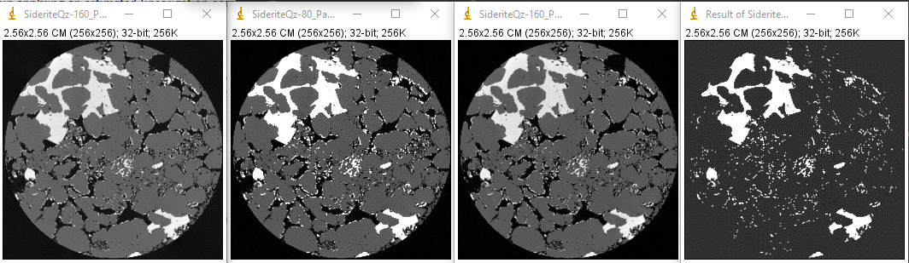
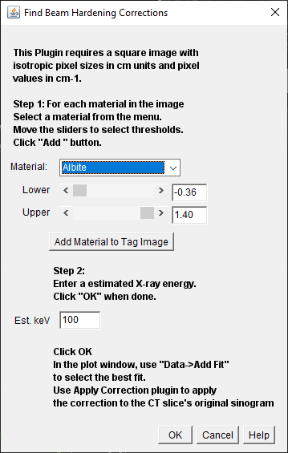
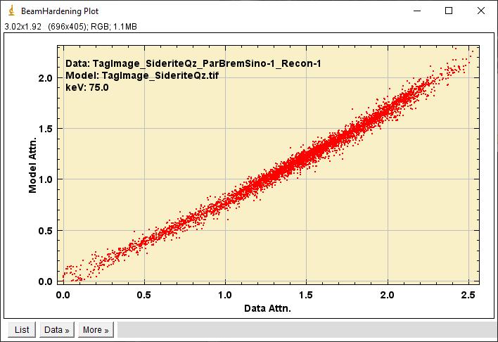
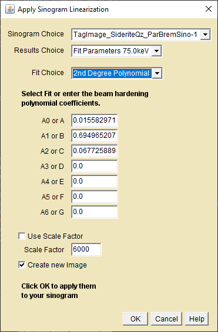
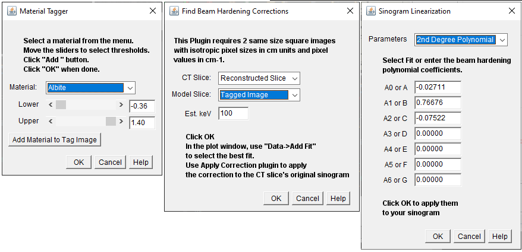

Before proceeding, please have a look at the CT Scanner Setup page
where filtering the X-ray beam to reduce beam-hardening artifacts is
briefly described. Even after filtering, depending on specimen
composition and structural heterogeniety, some hardening artifact may
remain. Whether or how to correct them depends on what is needed from
the image.
Correction by linearizing is a compromise that may not work
for all of the materials in a complex image.
Be cautious when applying the same correction to a 3D data
set.
If attenuation coefficients are important, check that material
attenuations and their ratios give the same effective energy.
Use the X-ray
Ratio Lookup plugin to obtain the effective energy(Eff)
using the brightness ratio between two materials.
Use the X-ray
MuLin Lookup plugin to obtain the Eff from the individual
materials.
Correcting severe hardening is often beyond the scope of these
plugins, but they sometimes work surprisingly well.
It may be easier to add filtration and repeat the CT-Scan.
The easiest way to qualitatively correct hardening is to use the slider
in the CT Recon Parallel Beam
plugin. The slider weights a 2nd order polynomial to compute a
corrected τcorr = (1-W)(τobs)
+ (W)(τ2obs).
This can often flatten the cupping artifact but the reconstructed
linear attenuations will usually will be wrong. As shown in the plot below, the linearization is not unique.
Observed attenuation(black) transformed to three linear functions
Reconstruct a slice without applying a linearization
correction.
Measure the linear attenuation of a small region of known
composition at or near the axis of rotation.
As the specimen rotates during the CT scan, the collection
of X-ray paths that go through the axis (medial rays) passes through
all other locations in the specimen. The attenuation at the axis is
reconstructed using the average energy for the whole slice.
Enter the measured attenuation and the composition and density
of the know material into the X-ray MuLin Lookup plugin and record the reported
energy.
Reconstruct a slice again applying an estimated linearization
correction that flattens the cupping.
Obtain the linear attenuation at the same location as before.
Multiply the flattened image by the uncorrected/corrected
attenuation ratio to produce an image with attenuations that represent
the effective energy probing the specimen.
Introduction
Beam-hardening and filtering the X-ray beam to reduce cupping artifact
are briefly described in the CT Scanner Setup page. Clearly, the ideal way to
minimize beam hardening artifacts is to use a monochromatic X-ray
source. Choosing a filter for a conventional X-ray source requires
optimizing the tradeoff between image quality requirements, X-ray
spectral band-width, and intensity.
More filtering reduces beam-hardening and increases scan time
to obtain the required S/N.
Some hardening artifact may still be present even after heavy
filtering.
Linearization
Linearization provides a method to reduce residual hardening artifact
by identifying a function, usually a polynomial, that linearizes the
attenuation vs path length relationship. A good guess is often
sufficient for qualitative attenuation results. CT Recon Parallel Beam has a built-in linearize
guesser. The slider weights a 2nd order polynomial, linearized τlin
= (1-W)(τobs) + (W)(τ2obs).
The plugin allows interactive selection of the weight that best
flattens the cupping artifact. Although the cupping is suppressed, the
reconstructed linear attenuations are usually not correct after using
this uncalibrated correction. The plot below illustrates that
linearizing functions are not unique.
The black line shows the observed attenuation vs. thickness for
an aluminum sample. The dashed lines show three arbitrary
linearizations using third order polynomials. The polynomial
coefficients are obtained by a least squares fit of the observed
attenuations to three arbitrary linear functions. When applied to the
observed attenuation the fits produce values along the dashed lines.
This can be relatively straightforward for relatively homogeneous
specimens but becomes more challenging as specimens become more
spatially and compositionally heterogeneous.
Linearization of Multi-Material Specimens
Introduction
With the exception of absorption edge crossing, the contrast due
to composition decreases with increasing X-ray energy. The images below
simulate the contrast between siderite(iron carbonate, bright) and
quartz(gray) acquired at accelerating potentials of 80 and 160KV with a
0.1cm copper filter.
Simulation conditions were configured using the Scanner Setup plugin.
Reconstruction were done using the CT Recon Parallel Beam plugin with no
beam-hardening correction.

Left to right, 160KV, 80KV, 160KV(scaled),
80KV-160KV(scaled)
The first two images have been scaled to display quartz at the same
gray level. The siderite in the 80KV image is brighter compared to
quartz than in the 160KV image. The 160KV(scaled) has been scaled to
match the level of quartz at 80KV. The forth image is a difference
image showing only siderite, see DEXA.
Since the contrast changes with X-ray energy, it should be
possible to estimate the X-ray energy from the contrast ratio.
The X-ray
Ratio Lookup plugin was used to obtain the effective energy(Eff)
using the brightness ratio of the two materials.
The X-ray
MuLin Lookup was used to obtain the Eff from the individual
components.
KV
quartz μlin
siderite μlin
Eff-ratio (keV)
Eff-quartz( keV)
Eff-siderite (keV)
80
0.6935
2.490
65.2
58.2
62.2
160
0.5165
1.300
89.8
79.4
86.5
Linear attenuations and calculated X-ray energies
Although this is a good qualitative result, the X-ray energies
are not in good agreement. The setup indicated a small amount of
residual beam hardening. If monochrimatic X-rays had been used, all of
the energies computed from material attenuation would be the same.
Model-based correction of beam-hardening artifact
The method requires a segmentable image with materials of
known composition and density.
The method does not currently include a provision for
including material porosities, but this would not be difficult to add
if porosity image data becomes routinely available.
Jumping ahead, the model-based linearizer produced the results
below for the siderite/quartz example.
KV
quartz μlin
siderite μlin
Eff-ratio (keV)
Eff-quartz( keV)
Eff-siderite (keV)
Eff-fit (keV)
80
0.61
2.210
65.2
66.1
64.0
65
160
0.48
1.22
89.8
88.9
88.9
88
Linear attenuations and calculated X-ray energies
after beam-hardening correction
Quantitative correction of beam hardening in multi-material specimens
with high Z contrast is more complicated and various solutions are
described in the literature1. Generally, the attenuations
measured from each material in the image will not be consistent with a
single effective energy and the image may contain streak artifacts. In
addition to linearization post-processing, it may be possible to reduce
attenuation errors and artifacts by using additional filtration. For
now I'll just discuss the plugins.
The first "finder" plugin combines the three steps, building a model,
comparing the model to the beam hardened image, and fitting the
comparision to several candidate polynomials, into one dialog. If
needed, the plugins for the individual steps are described here, and a graphical description of the
workflow is here.

The first plugin is the Linear Coefficient Finder
Click on the reconstructed slice that you want to fix to make
it the active window. slices must have pixel sizes in cm and pixel
values in cm-1
Select an small region in a known material at or close to the
axis of rotation and measure the observed attenuation. This group of
pixels is unique since the values are obtained from the average energy
of all rays passing through the portion of the specimen at the axis of
rotation.
Use the Lookup
plugin in this package to obtain the effective energy.
Select "Find Beam Hardening Corrections" plugin in the ImageJ
plugins menu. A blank image will appear next to the active window.
Select a specimen material from the Materials List.
Use the slider to threshold select the material in the active
window. If the beam hardening is too severe to properly threshold a
material an additional set of steps is described below.
Click the "Add Material to Tag Image" to add the material to
the model. Continue until all of the materials are tagged. Untagged
materials are set to 0, "empty space" in the model image.
Enter the x-ray energy found in step 3 in the Est keV Field
and Click OK.
The "Finder" will output a plot of the model vs image
attenuations and a list of several polynomial fits to the plot data.

Linearization "Finder" Output
The "Add Fit" in the Plot window's Data menu can be used to
examine the appropriateness of the fits listed in the "Fit Params"
table. Leave the Fit Params window open for use in the "Apply" plugin.
The second "apply" plugin corrects the original sinogram using
the selected polynomial coefficients.

Linearization "Apply" Dialog
Open or Click on the sinogram used to make the reconstructed
slice.
In the ImageJ plugins menu select the "Apply Linearization"
plugin.
Select the fit you want to apply(the Fit Params table must be
the active table).
Click OK to apply the fit to the sinogram.
Reconstruct the sinogram again to see the results.
Correcting Severe Beam Hardening
The plugins below, left to right, are the individual steps in the
"finder" dialog described above.

Linearization Plugins
When proper thresholding cannot resolve the materials in the
image, a rough approximation of the model slice can be used to reduce
the cupping so that thresholding is possible.
Select a small region in a known material at or close to the
axis of rotation and measure the observed attenuation. This group of
pixels is unique since the values represent the average energy of all
rays passing through the sample.
Use the Lookup
plugin in this package to obtain the effective energy.
In the combined "finder" dialog, use a threshold that selects
the specimen(do not include empty spaces) and tag it with a single
material, either the main component or some approximation.
Enter the effective keV and click OK
Apply the corrections to the image's sinogram and reconstruct.
The cupping should be substantially reduced but the attenuations will
be grossly in error.
Switching to the individual plugins:
Use the "Material Tagger" plugin and the slice from step 5
above to create a properly segmented tag image.
Use the Find Beam Hardening Corrections plugin. Select the
original beam-hardened reconstruction and the model image from step 1.
Enter the keV from step 4 above. Click OK
Choose the best fit and apply it to the original sinogram.
The "Material Tagger" plugin is a blunt instrument compared to
far more sophisticated pixel classifiers available to ImageJ. It is a
place-holder until a material tagger that uses more advanced
classifiers is written.
Beam Hardening Correction Work Flow
The workflow for correcting beam hardening artifacts using these
plugins.
The sinogram(b) is obtained experimentally or by creating a
sinogram using one of the bremsstrahlung
projector plugins on a digital image(a).
The reconstruction(c) is obtained using a 3rd party
reconstruction application2.
The model slice(d) is obtained using the tagger and the
converter.
The plot(e) and fits(f) are obtained using Fitter.
The corrected sinogram(g) is obtained using Apply.
The corrected reconstruction(h) is obtained using the 3rd
party reconstruction application.
Linearization Workflow
1. For example, "Beam Hardening Correction in X-ray
Computed Tomography: A Comparison of Two Iterative Model-based
Reconstruction Methods", K. Dremel et al., Proceedings of the 11th
European Conference on Non-Destructive Testing, October 6-10, Prague,
Czech Republic. Or Google "X-ray beam hardening correction".
2. The reconstructions on this page were made using
Fourier inversion of parallel projections.